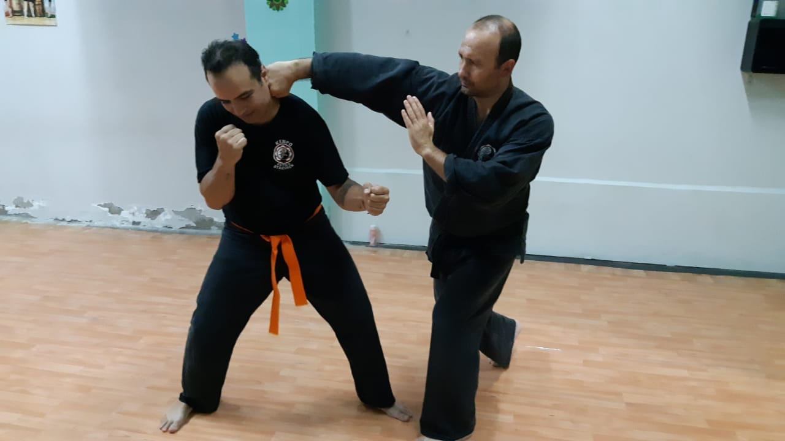

¿Necesito experiencia previa?
No. El sistema de enseñanza está pensado para un aprendizaje progresivo, sin importar el nivel inicial.
El Estilo
«Ken» es puño y «po» es método. Un sistema que usa todos los recursos del cuerpo y busca ser efectivo sin gastar fuerza de más.
La práctica
Es un tipo de boxeo que trabaja las distancias media y corta: ataques de puño y de pierna en combinaciones continuas, veloces y encadenadas. La potencia sale del giro de cadera, más que de la fuerza del brazo.
Cada vez que se golpea se está defendiendo. Una mano ataca mientras la otra vuelve cerca del cuerpo, en sentido defensivo. La postura es baja del principio al final, para tener raíz, pero los desplazamientos son rápidos.
A eso se suman proyecciones, luxaciones, trabajo de piso y armas tradicionales. Todo apunta a la defensa personal: resolver rápido y salir, sin quedarse intercambiando golpes.

El sistema
Van juntas y aparecen en todas las clases, desde la primera.
Manos y codos defienden y atacan a media y corta distancia. El cuerpo se pone de costado, con una mano más adelantada, para ofrecer el menor blanco posible. Las manos van cerradas en puño o abiertas, según lo que haga falta.
Se boxea desde tres alturas, y cada una tiene su guardia:
El boxeo de manos es central en el combate y tiene muchísimas variantes. Entre ángulos, posiciones de la mano y tipos de golpe, siempre hay una respuesta para cada situación.
Tai sabaki quiere decir «desplazamiento del cuerpo»: sacarlo de la línea del ataque. Es el primer paso y sirve para dos cosas.
Se aguantan semanas sin comer y algunos días sin tomar agua, pero muy poco tiempo sin respirar, y menos en una práctica intensa. Por eso la respiración se entrena como una técnica más.
Es diafragmática baja, con tiempos de uno por tres: uno para inhalar, tres para exhalar. La toma de aire es breve; la salida, profunda, prolongada, sin sonido y completamente relajada.
En esa exhalación el peso baja y se arma la base. Por eso las posturas son sólidas y, al mismo tiempo, elásticas y relajadas.
Principios
Una técnica bien hecha sirve más que muchas hechas a la fuerza.
No adherimos a competencias. Entrenamos para aprender bien la técnica y para tener la tranquilidad de saber defendernos.
Se trabaja con contacto, pero el objetivo es que nadie salga lastimado. Se evita la confrontación; si aparece, se resuelve rápido.
La práctica desarrolla coordinación, flexibilidad y equilibrio, y con el tiempo, seguridad en uno mismo.
Entrenar es cuidar la salud. La constancia es entender el esfuerzo que hay detrás de todo. Y el entrenamiento, con el tiempo, da seguridad. Alumnos de la sede de Mendoza
Bushidō · 武士道
El código de conducta de los samuráis. Lo tenemos presente en el dojo y también afuera.
Sé honrado en tu trato con todo el mundo. La justicia que importa no es la que emana de los demás sino la propia, y ahí no hay grises: hay lo correcto y lo incorrecto.
No hay motivo para ser cruel ni para andar demostrando fuerza. Se es cortés hasta con el rival. La fuerza de verdad se ve en los momentos difíciles.
Esconderse como una tortuga en su caparazón no es vivir. El coraje de verdad es inteligente y fuerte, nunca ciego.
Hay un solo juez del propio honor, y es uno mismo. Las decisiones que se toman, y la forma en que se llevan a cabo, son el reflejo de quién es cada uno realmente.
El entrenamiento vuelve a uno rápido y fuerte. Ese poder se usa a favor de los demás. Si la oportunidad de ayudar no aparece, se sale a buscarla.
Cuando se dice que se va a hacer algo, es como si ya estuviera hecho. No hace falta prometer: hablar y hacer son la misma acción.
Lo que uno hizo o dijo le pertenece, con todas sus consecuencias. Las palabras de una persona son como sus huellas: se pueden seguir a donde vaya.
Empezar
No. El sistema de enseñanza está pensado para un aprendizaje progresivo, sin importar el nivel inicial.
Usamos kenpogi. Si todavía no tenés, ropa cómoda y flexible, en colores sobrios: negro, blanco o gris.
El Kenpo es para cualquiera. Todos deberíamos saber cómo defendernos, y la práctica se adapta a cada persona.
Depende de cada alumno. Entrenando unas cuatro horas semanales, suele notarse confianza a los dos o tres meses.